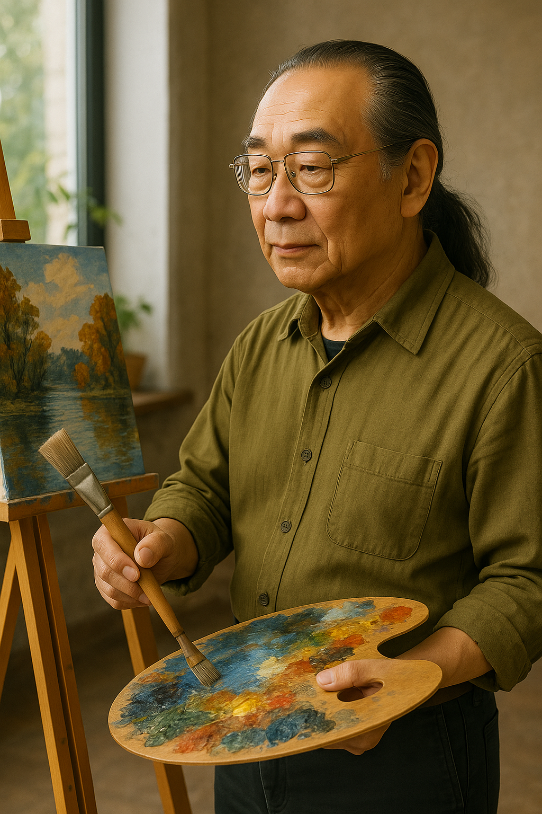
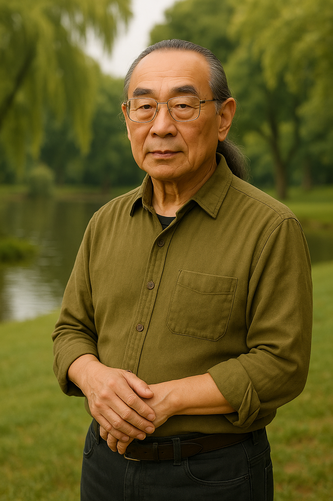
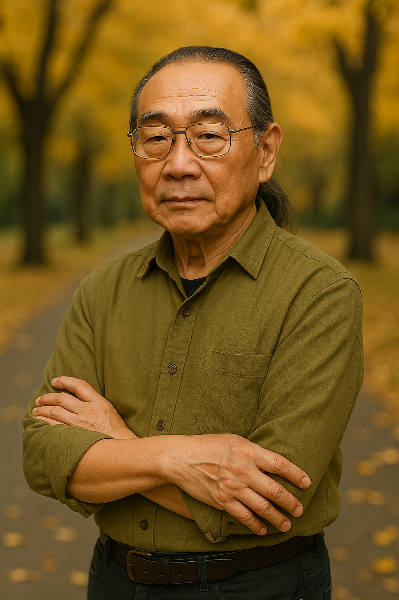
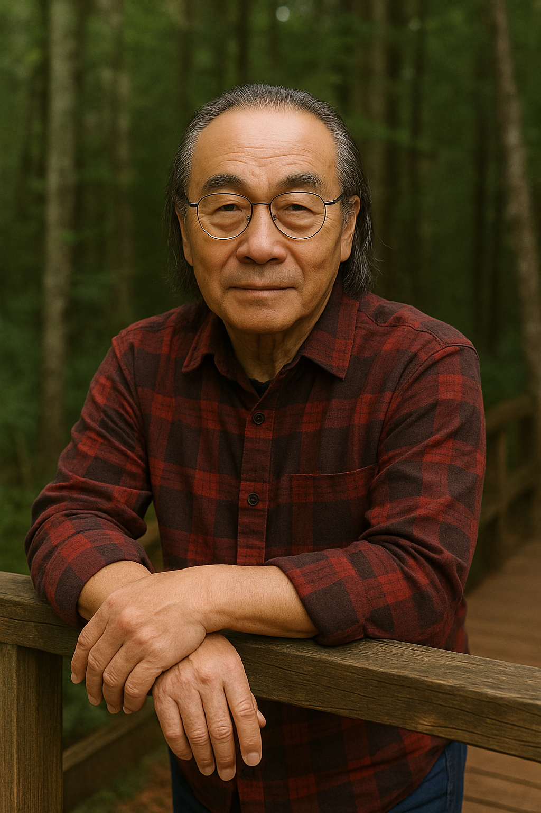
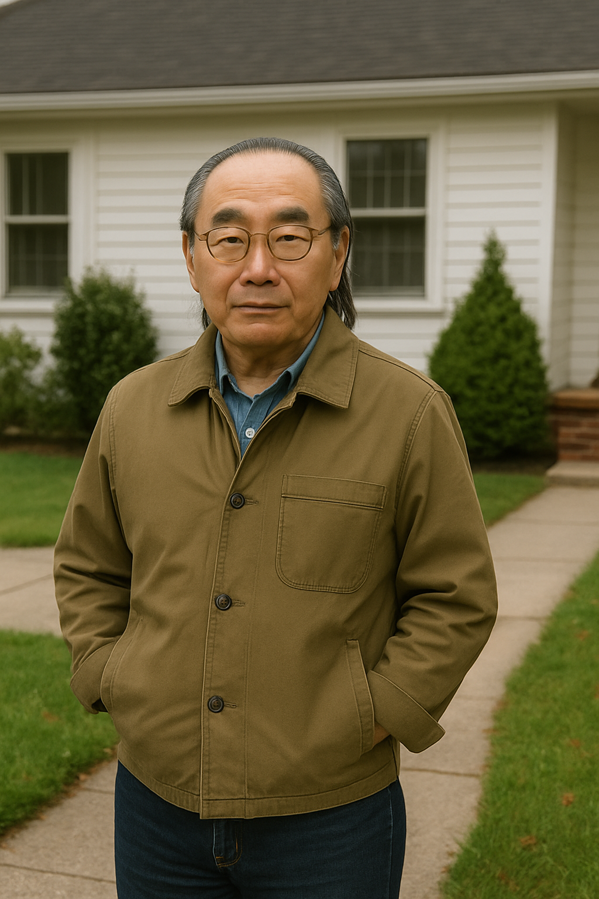
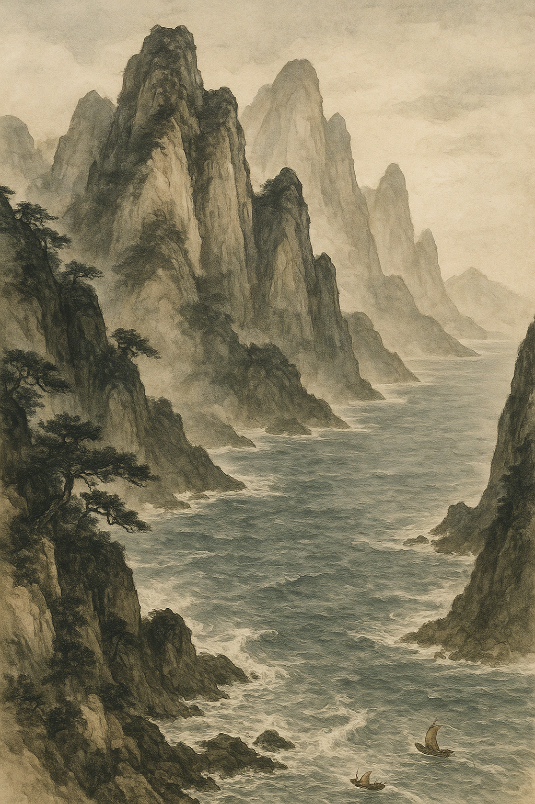
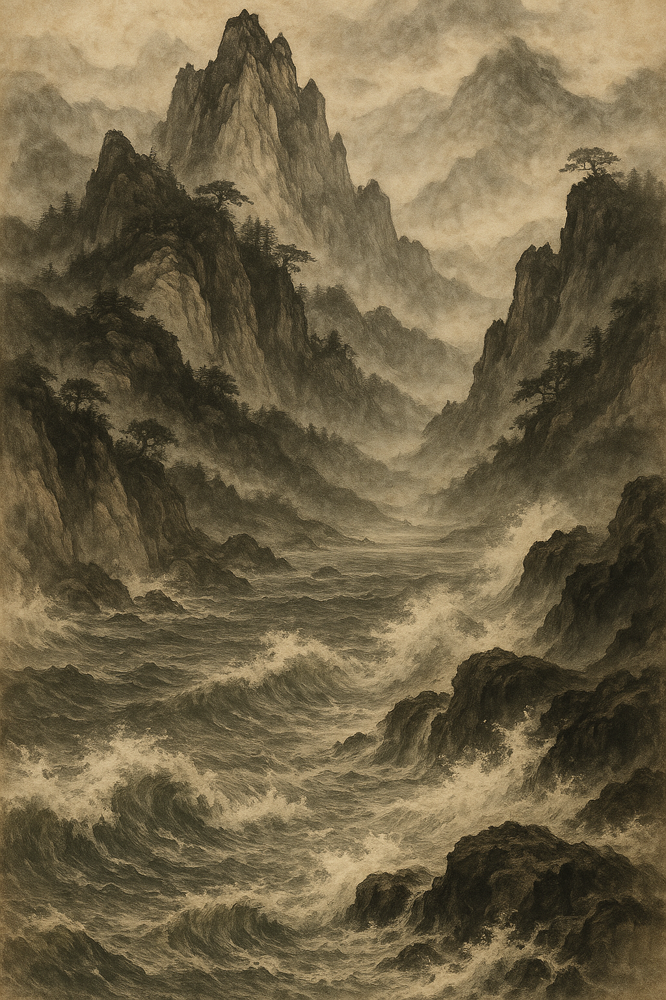
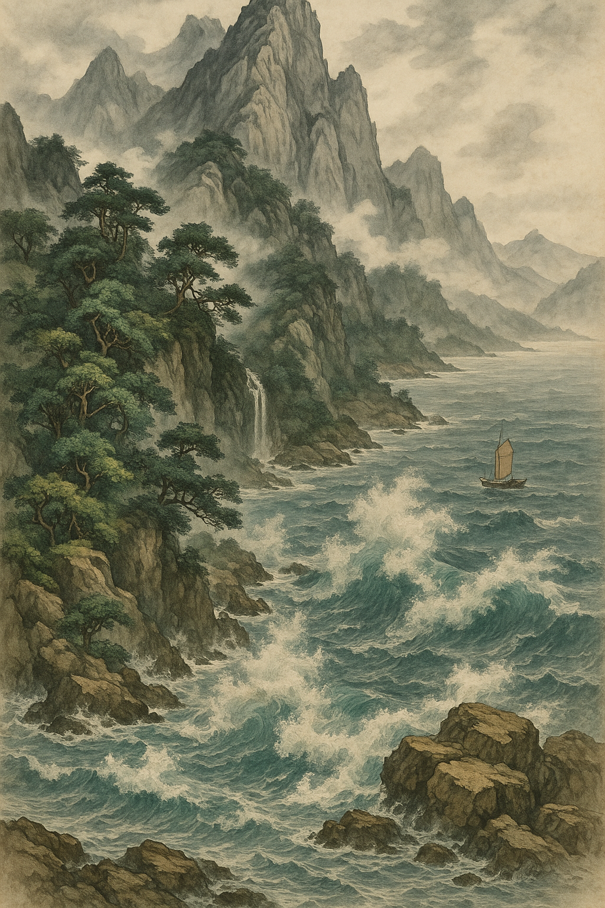

The Artistic World of Aixinjueluo Yinglan
About the Artist
Introduction
Aisin Gioro Yinglan, born in Beijing in 1943, is a direct 29th-generation descendant of the Qing imperial family who grew up steeped in palace ink traditions. In 1962, he enrolled in the Chinese Painting Department of the Central Academy of Fine Arts, and around 1972 he joined a government cultural exchange to the United States. Now based in the San Francisco Bay Area, Yinglan is best known for his “Echoes of Mountains and Seas” series, which blends refined courtly ink techniques with Western compositional methods and has made him a leading figure in cross-cultural ink art.
________________________________________
Courtly Heritage and Early Training
Yinglan’s family background gave him unique access to imperial art: his grandfather worked for the late Qing Hanlin Academy, and his father was one of the last palace conservators specializing in gilded landscape painting. As a child, he spent countless hours in the Qianqing Palace meticulously copying Ming and Qing masterworks, internalizing the precision and vitality of court brushwork. After finishing high school, he won admission to the Central Academy of Fine Arts, where he studied under prominent Lingnan-style masters. Upon graduation, he remained on staff as an assistant lecturer, organizing seminars on “Palace Manuscripts and Contemporary Ink” and later traveling to the National Palace Museum in Taipei to master Song and Yuan dynasty restoration techniques.
________________________________________
International Practice and Exchange
Yinglan’s international career began in 1971 when he was invited as a visiting scholar to the National Gallery of Art in Washington, D.C., where he juxtaposed traditional ink paintings with Western oil masterpieces in a “cross-cultural sketching” project that drew considerable media attention. Back on the East Coast, he converted an old Brooklyn warehouse into the “Oriental Landscape Studio,” inviting contemporary artists to experiment with ink in new contexts. By 1978 he had relocated to San Francisco, staging his first solo show at the SFMoMA Satellite, where he paired monumental ink scrolls with installation art—an influential milestone in East-West artistic fusion. In subsequent decades he taught master classes at Paris’s École des Beaux-Arts and led seminars at Columbia University, deepening creative dialogue across continents.
________________________________________
Key Exhibitions and Collections
Over more than fifty years, Yinglan has mounted major exhibitions and retrospectives worldwide. Highlights include “Echoes of Mountains and Seas: Dialogue in the East” at Tokyo’s National Museum of Modern Art; “Fifty Years of Yinglan” at the SFMoMA Satellite; and the 2018 touring show “Echoes of Mountains and Seas: A Contemporary Survey,” which opened at the Today Art Museum in Beijing before traveling to Shanghai and Guangzhou. His work is held in the permanent collections of the National Gallery of China, SFMoMA, Paris’s Centre Pompidou, the National Museum of Modern Art Tokyo, and London’s Victoria and Albert Museum, and it is prized by prominent private collectors.
________________________________________
Teaching and Philanthropy
Since 1988, Yinglan has been a tenured professor at the California College of the Arts, teaching courses such as “Intermedia Ink Experiments” and “The Future of Landscape in the Digital Age,” and mentoring hundreds of young artists from around the globe. He has also served as a visiting professor at the Central Academy of Fine Arts, Columbia University, and the École des Beaux-Arts, promoting educational exchange between East and West. In 1995, he founded the “Mountains and Seas Arts Fund,” which for over twenty years has supported art education for children in remote regions of western China and throughout Southeast Asia. As Artistic Director of UNESCO’s “Heritage and Innovation” forum, he has spearheaded multinational efforts to digitize and revitalize intangible cultural heritage.
________________________________________
Honors and Awards
Yinglan’s pioneering work has earned him numerous international honors: two grants from the U.S. National Endowment for the Arts; a Pollock-Krasner Foundation Fellowship; the French Chevalier de l’Ordre des Arts et des Lettres; honorary membership in the Royal Academy of Arts in London; and inclusion in ArtReview’s “Top 100 Most Influential Artists Worldwide.”
________________________________________
Artistic Style and Impact
At the heart of Yinglan’s practice is the “Echoes of Mountains and Seas” cycle, in which layered ink washes carve the “bones” of mountain forms, while textured oil paint and light installations evoke the “rhythm” of the sea. By marrying the Chinese tradition of luminous negative space and dynamic brushwork with Western compositional rigor and multimedia elements, he has redefined contemporary ink painting and inspired a generation of cross-cultural practitioners.
Personal Photos
   Featured Works
  


Contact Information
Email: aiyinglan43@gmail.com